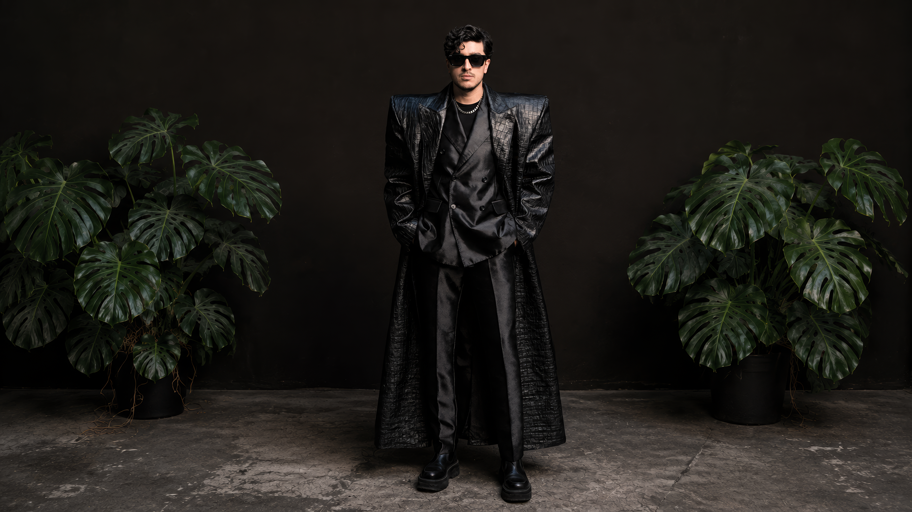
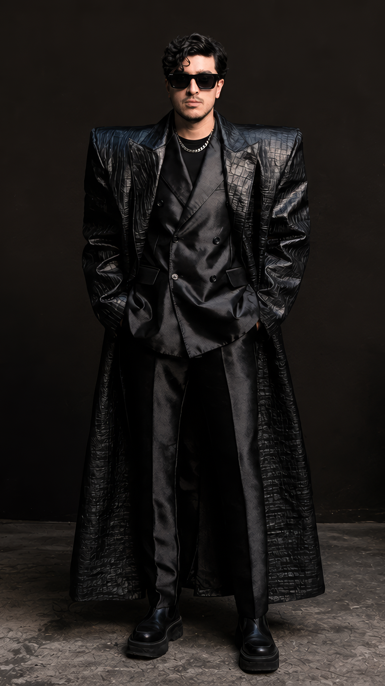

Study / 01
Cabizbajo is reinterpreted through Lotus 63, a material system developed within Fashion After Fabric.
The study explores how an existing artist identity changes when clothing becomes architectural, protective and visually inseparable from the body that carries it.



